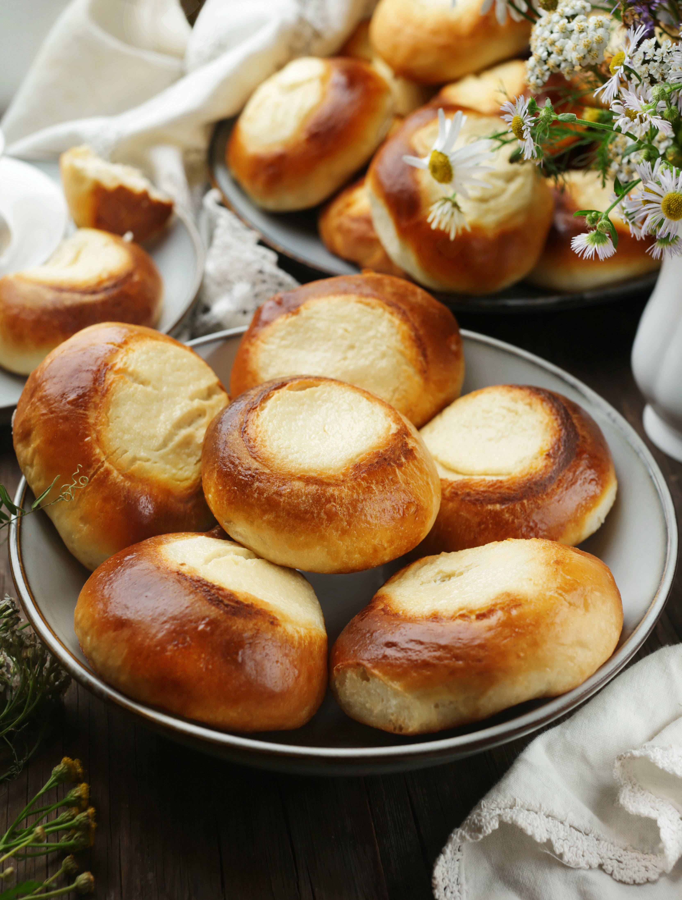

Мало что можно рассказать про ватрушки, кроме того, что и так всем известно. Это вкусные сдобные булочки с начинкой из творога, иногда с добавлением изюма или ягод, а то и просто с вареньем или повидлом. Хотя кроме сладкой версии существуют и несладкие ватрушки, где к творогу добавляют зелень или обжаренный лук. Тесто тоже может быть не только сдобное, но и обычное дрожжевое, с добавлением ржаной муки или слоёное. И если говорить о других вариантах, то можно готовить не только небольшие ватрушки, но и крупные, как пироги. Соотношение теста к начинке — 2:1, для маленьких ватрушек обычно берут 30 г начинки на 60 г теста. Творог лучше выбирать сухой (иногда его даже специально отвешивают, чтобы удалить лишнюю влагу). Но если хочется получить однородную нежную начинку, можно использовать мягкий творог, добавив яйцо, сметану, сахар, ванильный экстракт и 1–2 ст. л. кукурузного крахмала на 300 г массы. Тесто на ватрушки получается мягкое, его можно замешивать вручную или с помощью миксера, но удобнее всего в хлебопечке в режиме «тесто». Желательно поставить тесто на расстойку
для начинки:
для льезона: